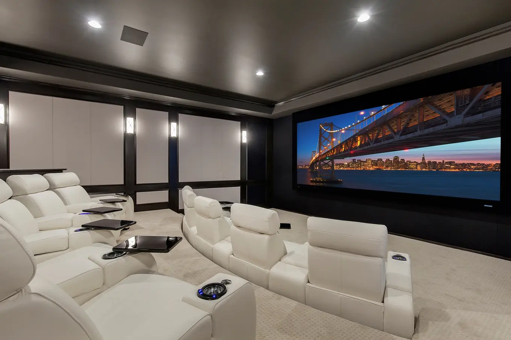
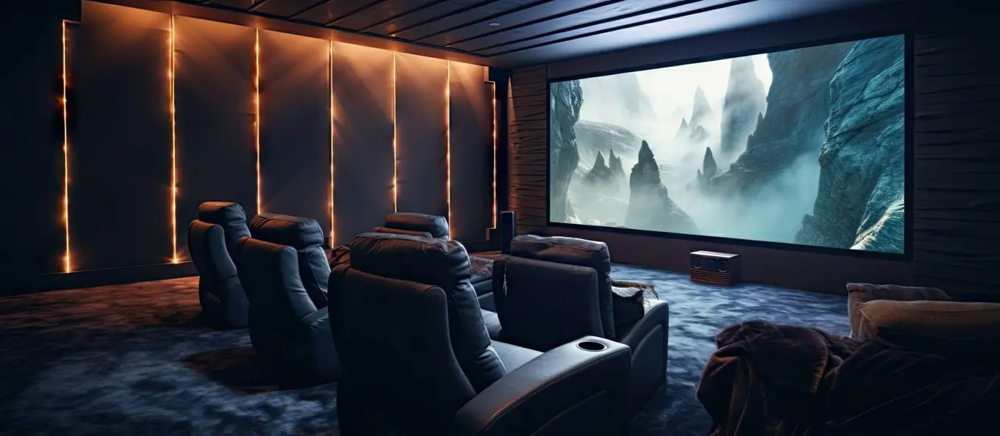
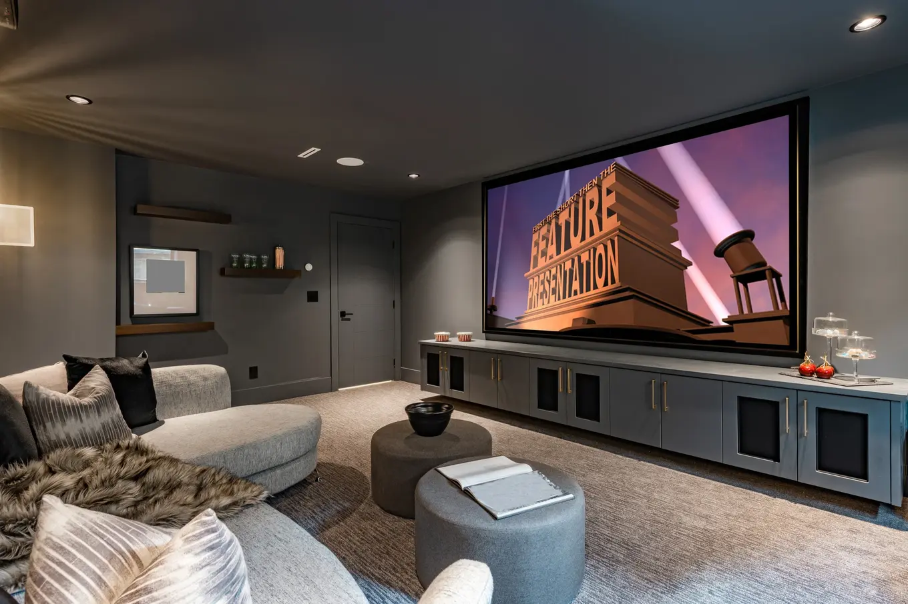
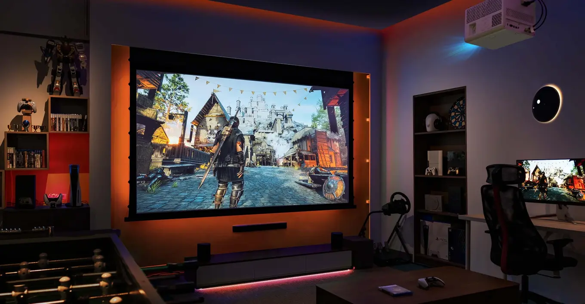
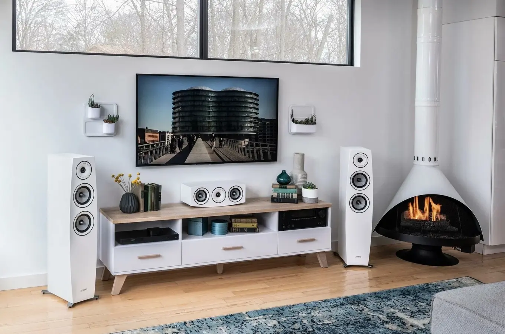
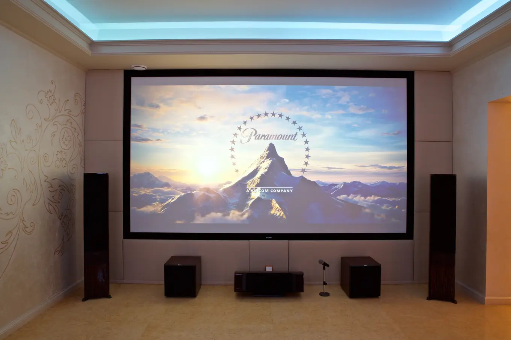
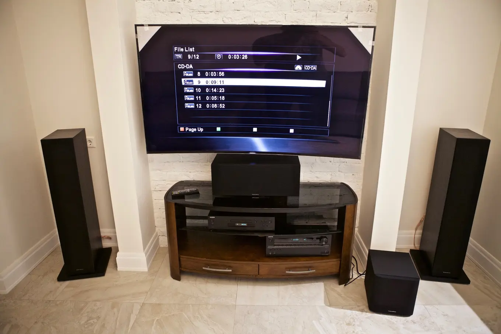
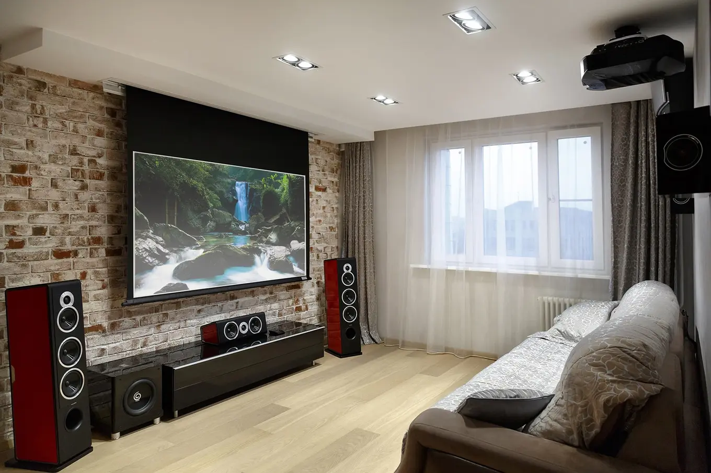

Персональный кинозал
Отдельное помещение с управляемым затемнением. Можно заранее рассчитать акустику, развести каналы Dolby Atmos и выбрать положение зрительских мест.
Выбрать форматЧетыре формата для дома. Подберите помещение, сравните восемь реализованных объектов и обсудите проект, визуализацию или просмотр в шоуруме.


Отдельное помещение с управляемым затемнением. Можно заранее рассчитать акустику, развести каналы Dolby Atmos и выбрать положение зрительских мест.
Выбрать формат
Экран с электроприводом, компактный проектор и встроенная акустика позволяют возвращать гостиную к обычному режиму после просмотра.
Выбрать формат
Для компактного помещения подбираем короткофокусный проектор, экран и акустику с учётом расстояния до зрителя.
Выбрать формат
OLED- или QLED-панель подходит для просмотра при дневном освещении. Звук можно дополнить саундбаром или компактной многоканальной системой.
Выбрать форматБюджеты и сроки взяты из карточек конкретных объектов.

Московская область · 30 рабочих дней

Московская область · 10 рабочих дней

Московская область · 40 рабочих дней

Московская область · 5 рабочих дней

Московская область · 5 рабочих дней

Москва · 15 рабочих дней

Московская область · 15 рабочих дней

Москва · 5 рабочих дней
Компания указывает эту сумму как минимальный бюджет проекта. Опубликованные домашние кинотеатры стоят от 1,5 до 10 млн ₽.
В анонсе кинотеатра указаны три года. В ответах компании для монтажа указан один год, для оборудования — до пяти лет по условиям производителя. Срок для выбранной комплектации согласуется в договоре.
Компания предлагает бесплатную визуализацию. В брифе укажите формат комнаты, выбранный пример и желаемую расстановку.

На 500 м² собраны шесть тематических зон с оборудованием более 25 брендов. На Звёздном бульваре можно сравнить изображение и послушать систему до выбора комплектации.
Заказ комплексной услуги у одного интегратора экономит время, деньги и нервы. Вы получаете единую точку ответственности, гарантию совместимости оборудования и качественного монтажа, а также профессиональную поддержку на всех этапах проекта.
Профессиональные мультимедийные решения предназначены для постоянной, бесперебойной работы в условиях повышенной нагрузки. Они отличаются от бытовых устройств повышенной надежностью, долговечностью, широкими возможностями настройки и управления, а также специальными функциями, необходимыми для решения бизнес-задач. Профессиональные решения имеют более длительную гарантию и обеспечивают более качественное изображение и звук.
Поход в кино - это, несомненно, замечательный способ времяпрепровождения. Однако куда более приятно расположиться возле широкоформатного экрана в мягком и удобном кресле, с чашкой горячего чая, в уютной и комфортной для вас обстановке. Именно поэтому сегодня такой большой популярностью пользуются домашние кинотеатры. Кто-то скажет, что в домашних условиях невозможно добиться нужного качества звука и изображения, да и эффект от просмотра фильма будет не тот - это совсем не так!
Домашний кинотеатр - это набор оборудования, который необходимо вписать в интерьер готового дизайна, тогда, как Персональный домашний кинозал - это полноценный проект, включающий в себя: индивидуально подобранную мебель и кресла, дизайн помещения, элементы декора, расчет акустических параметров, шумоизоляция, ковровое покрытие в «театральном» стиле, занавес и многое другое. Все эти элементы будут органично вписано в интерьер так, чтобы не привлекать к себе лишнего внимания.
Выберите задачу для помещения. Она появится в брифе вместе с названием решения.